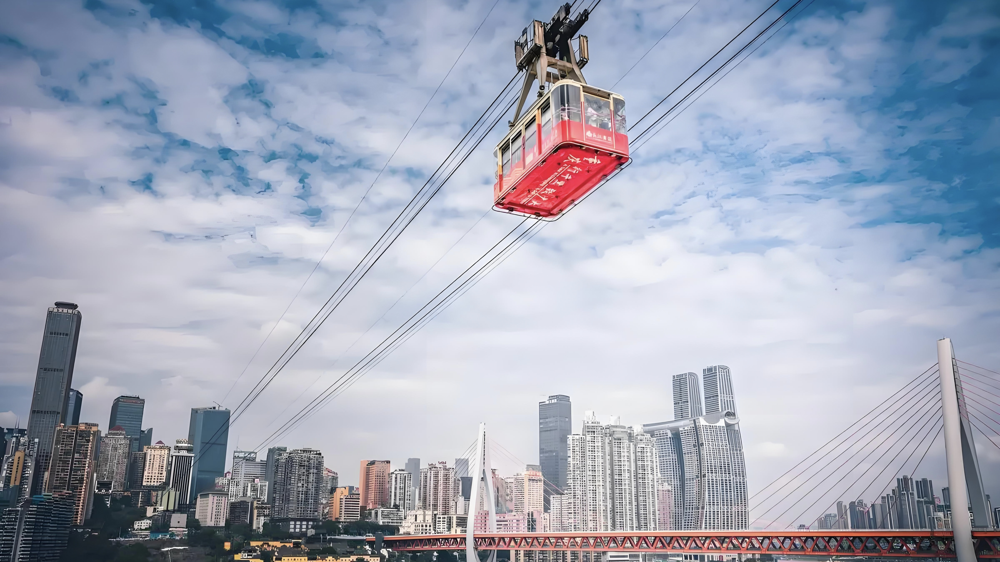
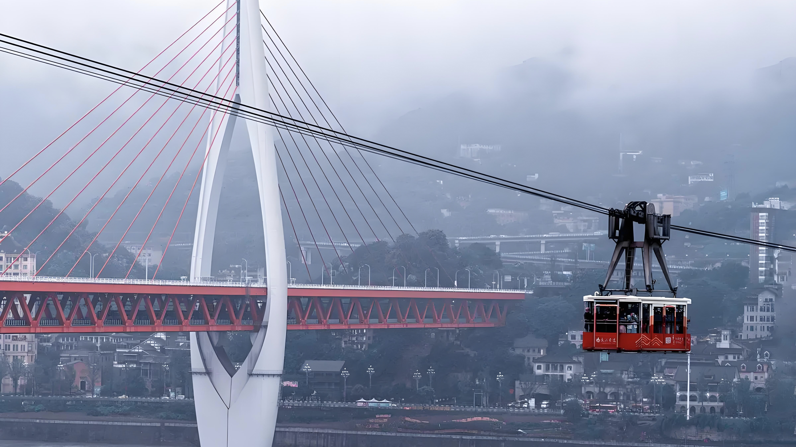

长江索道
重庆长江索道，被誉为“万里长江第一条空中走廊”，是中国最长的城市索道。它横跨长江，连接重庆市南岸区南滨路和渝中区上清寺，全长约1166米，是重庆的一大标志性景观。
重庆长江索道始建于1986年，于1987年投入运营。最初，它的主要功能是为了解决重庆市区与南岸区的交通问题。随着时间的推移，它逐渐成为了一个备受游客喜爱的观光项目，每年吸引着成千上万的游客前来体验。
重庆长江索道配备了先进的安全系统和设备，以确保乘客的安全。索道车厢宽敞舒适，可容纳多达100名乘客。此外，索道还提供各种语言的服务，以满足来自世界各地的游客的需求。
乘坐重庆长江索道，游客可以欣赏到壮丽的长江景色和重庆市区的美丽风光。从南滨路出发，随着索道的缓缓上升，你可以看到长江两岸的壮观景色，以及远处的山峦和城市天际线。在渝中区上清寺站下车后，游客还可以游览周边景点，如解放碑、洪崖洞等。
作为连接重庆市区与南岸区的交通要道，重庆长江索道在很大程度上缓解了当地的交通压力。它不仅为市民提供了快速便捷的交通方式，也促进了区域经济的发展。此外，索道的观光功能也为当地旅游业带来了可观的收益。